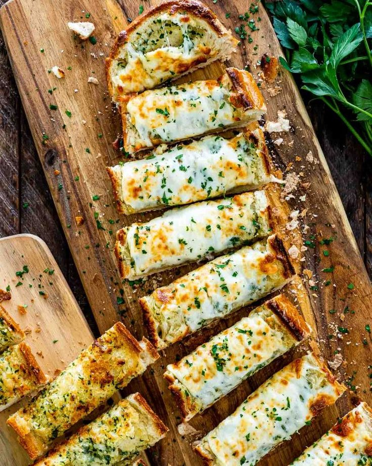

this includes instructions and an ingredient list for garlic bread!
Garlic Bread

Ingredients:
- 1 loaf French bread
- 1 stick salted butter (room temp)
- 6 cloves of garlic, minced
- 1/4 cup italian salad dressing (store-bought works)
- 1/4 cup parmesan cheese, grated
- 3 cups shredded mozzarella cheese
- Fresh parsley
- Preheat oven to 350°
- Combine the butter, garlic, Italian salad dressing, and 1 cup of the Mozzarella cheese in a large bowl until well incorporated.
- Slice the French bread in half lengthwise and spread the top of each half with equal amounts of garlic butter.
- Place the halves on a baking sheet, butter side up. Top with Parmesan cheese, then with remaining Mozzarella.
- Bake for 10 minutes, until the cheese is melted.
- Increase heat to 450° and bake for up to 8 additional minutes, until the top begins to brown. Keep an eye on it during this time.
- Remove and cut into 1-inch slices. Garnish with parsley and serve with pasta, soup, or homemade marinara sauce.